01หน่วยลับและกองกำลังพิเศษของจักรวรรดิ

Inquisition (อินควิซิชัน)
หน้าที่: ตำรวจลับและหน่วยข่าวกรองของจักรวรรดิ ไล่ล่าภัยทุกรูปแบบ อยู่นอกสายบังคับบัญชาปกติ
Inquisitor มีอำนาจแทบไม่จำกัด แบ่งเป็น Ordo Malleus (ปีศาจ), Ordo Hereticus (คนนอกรีตและผู้ใช้พลังจิตเถื่อน) และ Ordo Xenos (ต่างดาว) ภายในแตกเป็นสาย Puritan ที่เคร่งครัด กับ Radical ที่ยอมใช้พลังของศัตรู
30K vs 40K: ก่อตั้งโดย Malcador ช่วงท้าย Heresy — ยุค 40K กลายเป็นองค์กรที่ทุกคนหวาดกลัว
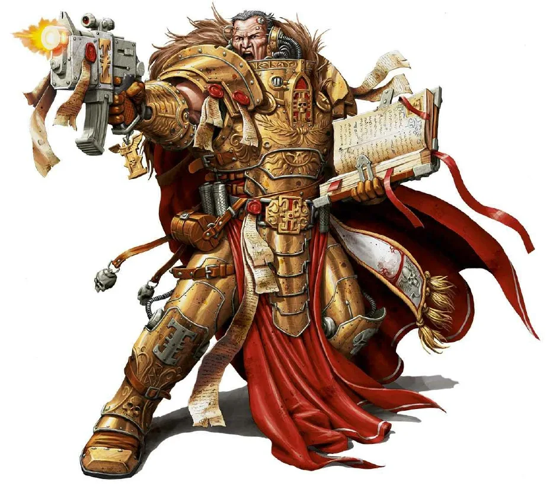
Ordo Malleus (ออร์โด มาลเลียส)
หน้าที่: ล่าปีศาจและภัยจาก Chaos
ใช้ Grey Knights เป็นกองกำลังรบ และปิดข่าวการบุกของปีศาจจากประชาชน
30K vs 40K: ไม่มีในยุค 30K

Ordo Hereticus (ออร์โด เฮเรติคัส)
หน้าที่: ล่าคนทรยศ ลัทธินอกรีต และผู้ใช้พลังจิตที่ไม่ได้รับอนุญาต ('แม่มด')
ใช้ Adepta Sororitas เป็นกองกำลังรบ
30K vs 40K: ไม่มีในยุค 30K

Officio Assassinorum (ออฟฟิชิโอ แอสแซสซิโนรัม)
หน้าที่: หน่วยนักฆ่าของจักรวรรดิ แบ่งเป็นสำนัก (Temple) ตามวิธีสังหาร
ผู้นำหน่วย (Grand Master) เป็นหนึ่งใน High Lords ทุกสำนักรับคำสั่งผ่านการอนุมัติของ High Lords
30K vs 40K: ยุค 30K เรียกสำนักว่า Clade และเคยถูก Malcador ส่ง 'Execution Force' ไปลอบสังหาร Horus
Vindicare Temple (วินดิแคร์)
หน้าที่: นักซุ่มยิง
แม่นที่สุดในจักรวรรดิ คติประจำสำนัก 'ผลลัพธ์พิสูจน์การกระทำ'

Callidus Temple (คาลลิดัส)
หน้าที่: นักฆ่าหญิงสายแทรกซึม
ใช้ยา Polymorphine เปลี่ยนรูปร่างปลอมตัวเป็นคนอื่น

Eversor Temple (เอเวอร์เซอร์)
หน้าที่: นักฆ่าสายสร้างความหวาดกลัว
ถูกกระตุ้นด้วยยาจนคลั่ง ถูกแช่แข็งไว้จนถึงเวลาปล่อย และร่างระเบิดเมื่อตาย

Culexus Temple (คูเล็กซัส)
หน้าที่: นักฆ่าผู้ล่าผู้มีพลังจิต
เป็น 'Pariah' ที่ไร้วิญญาณ ทำให้ผู้มีพลังจิตรอบตัวอ่อนแอ แม้แต่ชาว Aeldari ยังเรียกว่าสิ่งชั่วร้ายบริสุทธิ์

Sisters of Silence (ซิสเตอร์ส ออฟ ไซเลนซ์)
หน้าที่: นักรบหญิงไร้วิญญาณ (Pariah) ผู้ล่าแม่มดและปีศาจ
สาบานเงียบตลอดชีวิต สื่อสารด้วยภาษามือ ทำงานคู่กับ Custodes
30K vs 40K: ยุค 30K มีบทบาทใหญ่ เช่นร่วมเผา Prospero — ยุค 40K แทบหายไปจนกลับมาปรากฏอีกครั้งพร้อม Custodes
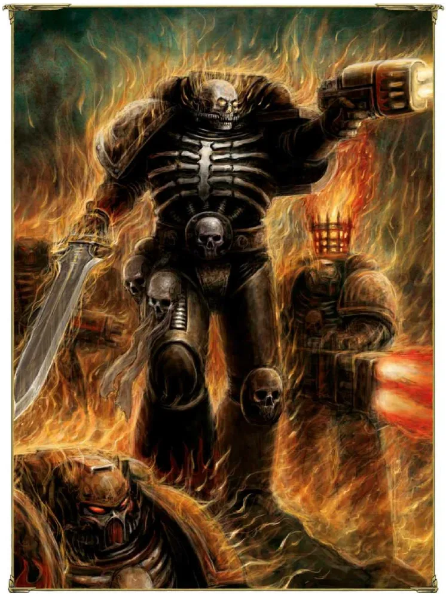
Legion of the Damned (ลีเจียน ออฟ เดอะ แดมด์)
หน้าที่: Space Marine ปริศนาที่ปรากฏตัวเมื่อฝ่ายจักรวรรดิสิ้นหวัง
เกราะดำลายกระดูก ลุกด้วยเปลวไฟ ไม่พูดจา และหายไปหลังรบเสร็จ ไม่มีใครรู้ว่ามาจากไหน
30K vs 40K: ปรากฏเฉพาะในยุค 40K

Black Shields (แบล็ก ชิลด์ส)
หน้าที่: Space Marine ที่ลบตรา Chapter เดิมแล้วเข้า Deathwatch
อ่านรายละเอียดที่หน้า Space Marine เจาะลึก
30K vs 40K: ยุค 30K มี 'Blackshields' ซึ่งเป็นอีกกลุ่ม
02องค์กรที่ทำให้จักรวรรดิทำงานได้
Adeptus Administratum (อเดปตัส แอดมินิสตราตุม)
หน้าที่: ระบบราชการของจักรวรรดิ ข้าราชการนับพันล้าน
เก็บภาษี (Tithe) จัดการทะเบียน และจัดส่งทหาร — ช้าจนบางคำสั่งใช้เวลาหลายร้อยปี
30K vs 40K: ยุค 30K เรียกว่า Imperial Administration
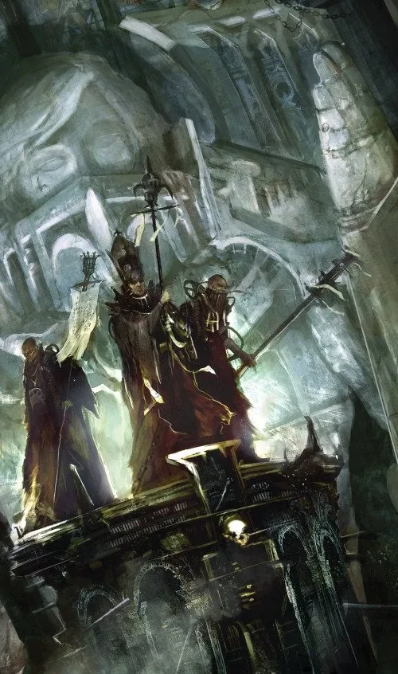
Ecclesiarchy (Adeptus Ministorum) (เอคเคลเซียร์กี)
หน้าที่: ศาสนจักรที่ดูแลการบูชาจักรพรรดิของประชาชนนับล้านล้าน
ห้ามมี 'ทหารชาย' ตาม Decree Passive จึงใช้ Adepta Sororitas
30K vs 40K: ยุค 30K ยังไม่มี (จักรพรรดิห้ามบูชาพระองค์)

Adeptus Arbites (อเดปตัส อาร์ไบทีส)
หน้าที่: ตำรวจของจักรวรรดิ บังคับใช้กฎหมาย Lex Imperialis
เป็นทั้งตำรวจ ผู้พิพากษา และเพชฌฆาต — ไม่ยุ่งอาชญากรรมท้องถิ่น แต่ดูแลการกบฏและการไม่ส่งภาษีให้จักรวรรดิ

Navigators (นาวิเกเตอร์)
หน้าที่: มนุษย์กลายพันธุ์ที่มีตาที่สามบนหน้าผาก นำทางยานผ่าน Warp
ถ้าไม่มี Navigator ยานข้ามดาวไม่ได้ พวกเขารวมเป็นตระกูลขุนนาง (Navis Nobilite) และมีที่นั่งใน High Lords
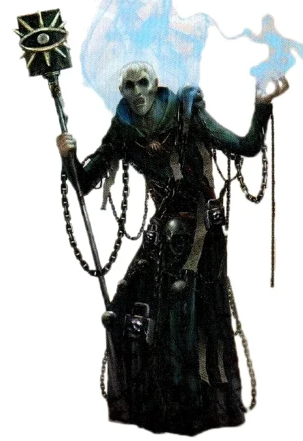
Astropaths (แอสโตรพาธ)
หน้าที่: ผู้มีพลังจิตที่ส่งข้อความข้ามดาวด้วยโทรจิต
ต้องผ่านพิธี Soul-Binding กับจักรพรรดิซึ่งมักทำให้ตาบอด เป็นระบบสื่อสารเดียวที่เร็วกว่าแสง
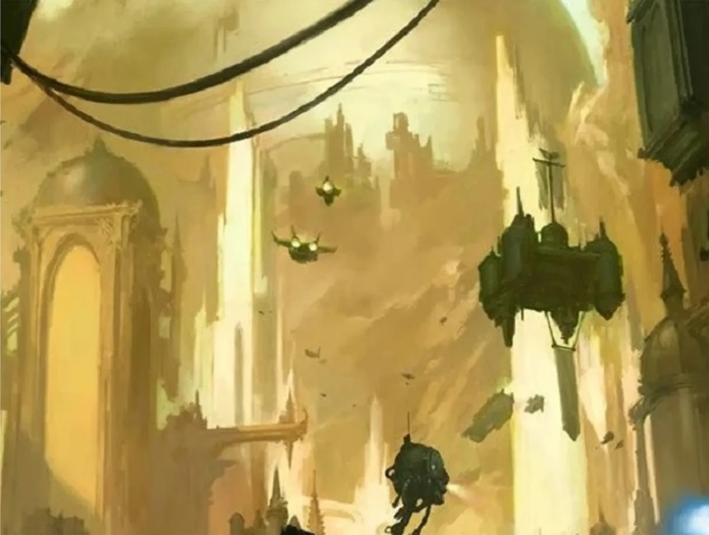
Astronomican (แอสโตรโนมิคอน)
หน้าที่: สัญญาณนำทางพลังจิตจาก Terra ที่ Navigator ใช้บอกทิศ
ส่งผ่านจักรพรรดิบน Golden Throne และใช้พลังชีวิตของผู้มีพลังจิตที่ถูกคัดเลือกนับพัน
30K vs 40K: ช่วง Noctis Aeterna หลัง Great Rift แสงนี้ดับไปชั่วคราว
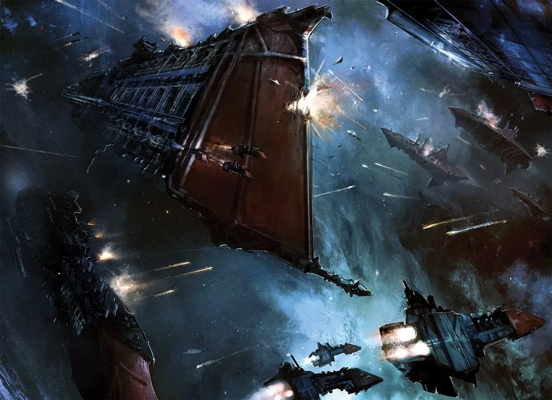
Imperial Navy (Navis Imperialis) (อิมพีเรียล เนวี)
หน้าที่: กองทัพเรืออวกาศ ขนส่งทหารและรบในอวกาศ
ยานรบยาวหลายกิโลเมตร ลูกเรือนับหมื่น
30K vs 40K: ยุค 30K อยู่รวมกับกองทัพบกใน Imperial Army

Collegia Titanica (Titan Legions) (คอลเลเจีย ไททานิกา)
หน้าที่: กองหุ่นรบยักษ์ Titan ของ Mechanicus
Titan สูงหลายสิบเมตร เป็นอาวุธทางบกที่ทรงพลังที่สุดของจักรวรรดิ
30K vs 40K: ยุค 30K Titan Legion บางส่วนทรยศเข้ากับ Horus

Rogue Traders (โรก เทรดเดอร์)
หน้าที่: นักสำรวจ พ่อค้า และผู้พิชิตที่ได้ใบอนุญาต (Warrant of Trade)
ออกไปนอกเขตจักรวรรดิได้อย่างอิสระ ค้าขายหรือแม้แต่ติดต่อกับต่างดาว สืบทอดตำแหน่งในตระกูล
30K vs 40K: ใบอนุญาตบางฉบับออกโดยจักรพรรดิเองตั้งแต่ยุค Great Crusade
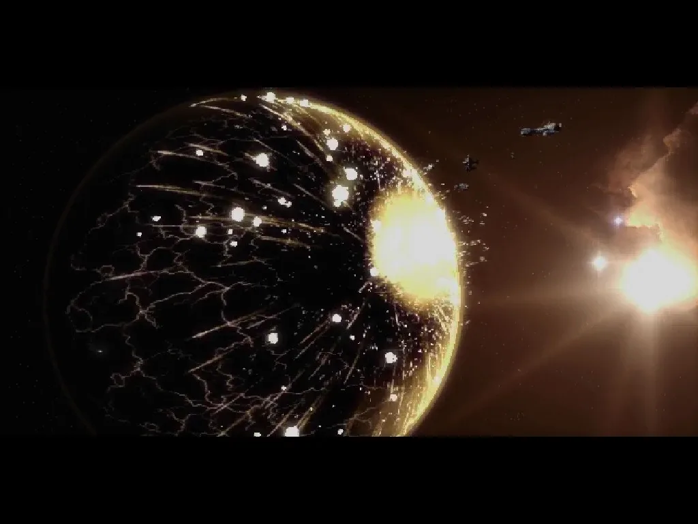
Exterminatus (เอ็กซ์เทอร์มิเนตัส)
หน้าที่: คำสั่งทำลายสิ่งมีชีวิตทั้งดาว
ใช้เป็นทางเลือกสุดท้ายเมื่อดาวเป็นภัยต่อทั้งจักรวรรดิ อนุมัติโดยผู้มีอำนาจสูงสุด เช่น Inquisitor
03การปกครองและองค์กรเพิ่มเติม
โครงสร้างที่ทำให้จักรวรรดิที่มีดาวนับล้านดวงยังคงทำงานต่อได้ — แม้จะช้าและโหดร้าย

Ordo Xenos (ออร์โด ซีนอส)
หน้าที่: สาขาของ Inquisition ที่ศึกษาและล่าเอเลียน
ใช้ Deathwatch เป็นกองกำลังรบ บาง Inquisitor ของสาขานี้ยอมใช้เทคโนโลยีเอเลียน หรือเลี้ยง Jokaero เป็นช่างอาวุธ
ไม่มีในยุค 30K
Ordo ย่อยอื่น ๆ (ออร์โด ย่อย)
หน้าที่: Inquisition ยังมีสาขาเล็ก ๆ อีกมาก
เช่น Ordo Sicarius (ดูแลสำนักนักฆ่า), Ordo Machinum (ดูแล Mechanicus), Ordo Astartes (จับตา Space Marine) และ Ordo Sepulturum (ภัยจากโรคระบาดที่ทำให้ศพลุกขึ้น)
Vanus Temple (วานัส)
หน้าที่: นักฆ่าสายข้อมูล
ไม่ได้ฆ่าด้วยมือตัวเอง แต่ใช้ข้อมูลและการแฮกระบบให้เป้าหมายตายเอง หรือทำให้ศัตรูพังจากภายใน
Venenum Temple (เวเนนัม)
หน้าที่: นักฆ่าสายยาพิษ
ผู้เชี่ยวชาญยาพิษที่ตรวจจับไม่ได้ ทำให้การตายดูเหมือนอุบัติเหตุหรือโรค
High Lords of Terra (ไฮลอร์ด ออฟ เทอร์รา)
หน้าที่: สภาผู้ปกครองสูงสุดของจักรวรรดิในนามจักรพรรดิ
ตามธรรมเนียมมี 12 ที่นั่ง เช่น Master of the Administratum, Ecclesiarch, Fabricator-General, ตัวแทน Inquisition, Grand Provost Marshal (Arbites), Paternal Ascendant (Navigator), Master of the Astronomican, Master of Astropaths, Grand Master of Assassins, Lord Commander Militant และ Lord High Admiral ในยุค M42 Guilliman ในฐานะ Lord Commander of the Imperium นั่งเป็นประธาน
ยุค 30K ยังไม่มี — จักรพรรดิและ Malcador ปกครองผ่านสภา Council of Terra
Planetary Governor (ผู้ว่าการดาว)
หน้าที่: ผู้ปกครองดาวแต่ละดวงในนามจักรพรรดิ
มีอิสระเกือบเต็มที่ในการปกครองตราบใดที่ส่งภาษี (Tithe) และทหารครบ ถ้าก่อกบฏหรือไม่ส่งภาษี จะถูก Arbites หรือ Inquisition จัดการ
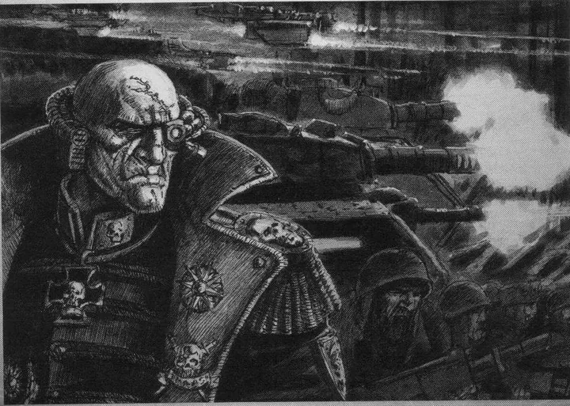
Officio Prefectus (ออฟฟิชิโอ พรีเฟ็กตัส)
หน้าที่: หน่วยงานที่ฝึกและส่ง Commissar ไปประจำกองทัพ
Commissar รักษาวินัยและขวัญกำลังใจ มีสิทธิ์ประหารใครก็ได้ในกองทัพที่ขลาดหรือทรยศ
ยุค 30K ยังไม่มี Commissar แบบนี้
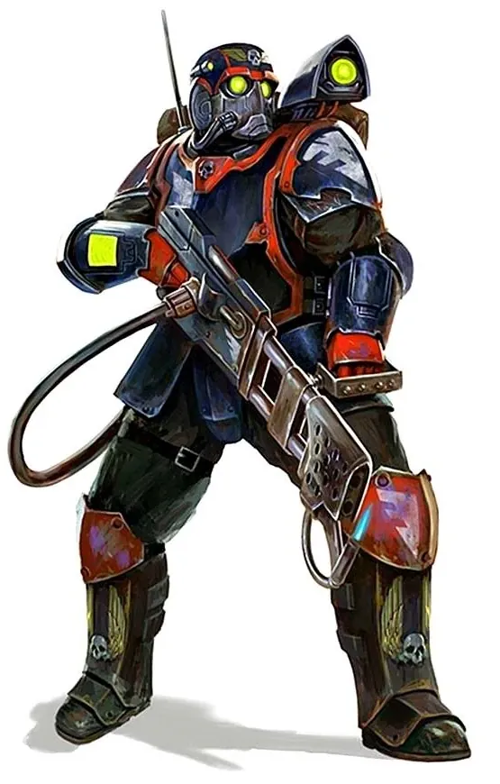
Schola Progenium (สโคลา โพรเจเนียม)
หน้าที่: โรงเรียนสำหรับเด็กกำพร้าของเจ้าหน้าที่จักรวรรดิที่ตายในหน้าที่
ผลิต Commissar, Tempestus Scions, Sisters of Battle และข้าราชการระดับสูง ศิษย์ถูกฝึกให้ภักดีสุดใจ
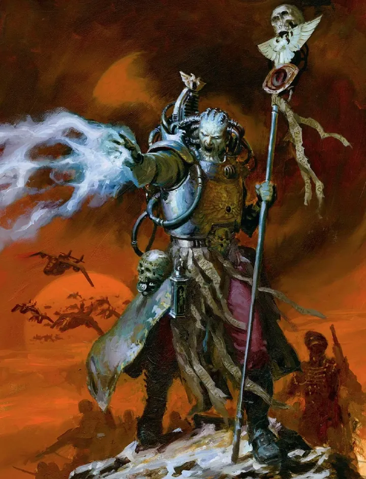
Scholastica Psykana (สโคลาสติกา ไซคานา)
หน้าที่: หน่วยงานที่คัดกรองและฝึกผู้มีพลังจิตที่ Black Ships เก็บมา
ผู้ที่ผ่านการฝึกกลายเป็น Astropath หรือ Sanctioned Psyker รับใช้กองทัพ ส่วนที่ไม่ผ่านถูกส่งไปหล่อเลี้ยง Astronomican
Cabal (คาบาล)
หน้าที่: องค์กรลับของกว่าพันเผ่าที่ต้องการทำลาย Chaos
ทำนายอนาคตและแทรกแซงเหตุการณ์ บอก Alpha Legion ว่าการชนะของ Horus จะดีต่อกาแล็กซีมากกว่า — ดูเพิ่มที่ เผ่าพันธุ์อื่น ๆ
มีบทบาทในยุค Horus Heresy
04องค์กรของฝ่าย Chaos และเผ่าต่างดาว
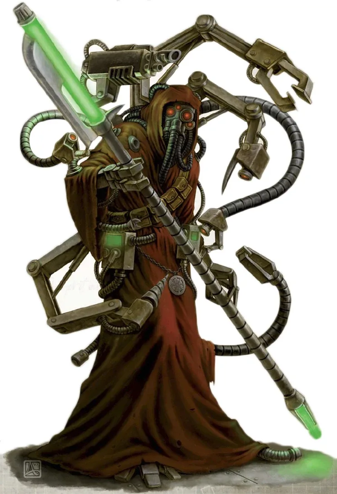
Dark Mechanicum (ดาร์ก เมคานิคัม)
หน้าที่: Tech-priest ผู้ทรยศที่รับใช้ Chaos
สร้าง Daemon Engine และเทคโนโลยีต้องห้าม
30K vs 40K: เกิดจาก Schism of Mars ในยุค 30K
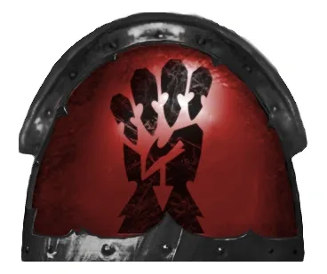
Red Corsairs (เรด คอร์แซร์ส)
หน้าที่: กองโจรสลัด Chaos ใน Maelstrom นำโดย Huron Blackheart
รับผู้ทรยศทุกคนที่มาสมัคร จึงใหญ่ขึ้นเรื่อย ๆ
30K vs 40K: เดิมคือ Chapter Astral Claws ก่อน Badab War
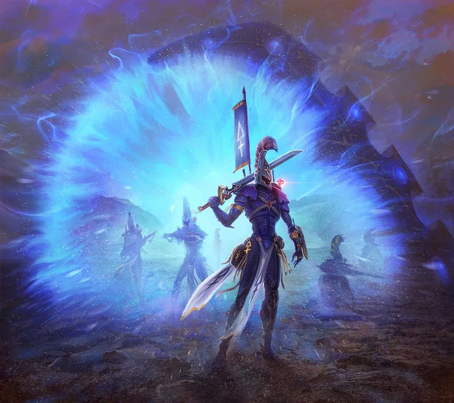
Webway (เว็บเวย์)
หน้าที่: เครือข่ายอุโมงค์ระหว่างมิติที่ Old Ones สร้าง
Aeldari ใช้เดินทางข้ามกาแล็กซีโดยไม่ต้องผ่าน Warp และเป็นที่ตั้งของ Commorragh
30K vs 40K: ยุค 30K จักรพรรดิพยายามสร้าง Webway ของมนุษย์ใต้พระราชวัง แต่ถูก Magnus ทำลายโดยไม่ตั้งใจ
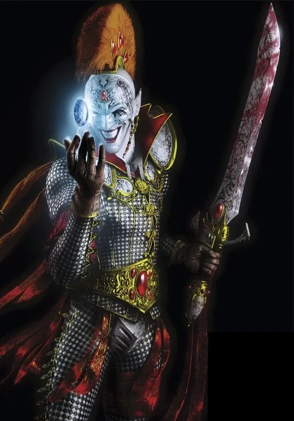
Black Library (แบล็ก ไลบรารี)
หน้าที่: คลังความรู้ลับเรื่อง Chaos ใน Webway
ดูแลโดย Harlequins ผู้รับใช้ Cegorach และมีเทพ Cegorach เองเป็นผู้พิทักษ์สูงสุด คลังนี้เก็บความรู้ที่อันตรายที่สุดเกี่ยวกับ Chaos ไว้ ผู้ที่ไม่ใช่ Aeldari น้อยคนนักที่ได้เข้า เช่น Inquisitor Czevak (ภาพประกอบ: Troupe Master Motley แห่ง Harlequins)